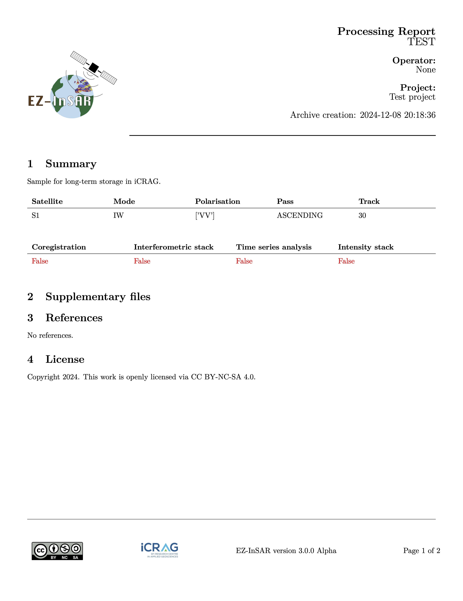

Technical information
Parameters
EZ-InSAR processing job works with two levels of parameters:
the super parameters, i.e.,
job.coregistration.mlran = 5 # Multilook factor in range job.coregistration.mlazi = 5 # Multillok factor in azimut
Note
The EZ-InSAR job contains only super parameters.
the processing parameters, defined by a dictionary. The EZ-InSAR sub-job contains super parameters and processing parameters.
job.ifgstack.ifggeocoding['process']['value'] = True
Here, ifgstack corresponds to the name of the processing job, and ifggeocoding is the processing step. Process is therefore the name of the parameter.
Note
EZ-InSAR checks the compatabilities of parameters between various EZ-InSAR versions:
if a processing parameter is not still available in EZ-InSAR, a warning message will be deplayed;
if a new processing parameter is available in EZ-InSAR but not in the .ei job file, a default value will be used.
if a super parameter is not available in EZ-InSAR, a error will be occured;
if a super parameter is available in EZ-InSAR but not in the .ei job file, a default value will be used.
On the SAR/InSAR processor
For Doris
Interface: Python (writing of input cards) -> Bash command -> Doris
Multi-threading: need to be confirmed
Parallelisation: Yes
Graphical-User-Interface integration: Yes
Testing: for single interferometric computation
For ISCE-2
Interface: Python -> Bash command -> ISCE-2
Multi-threading: Yes
Parallelisation: need to be fully tested
Graphical-User-Interface integration: Yes
Testing: Yes
For StaMPS
Interface: Python -> MATLAB engine-> StaMPS
Multi-threading: Yes
Parallelisation: Yes
Graphical-User-Interface integration: under testing
Testing: Yes
For MintPy
Interface: Python -> Python -> MintPy
Multi-threading: Yes (see MintPy’s docs)
Parallelisation: Yes (see MintPy’s docs)
Graphical-User-Interface integration: Yes
Testing: Yes
For LiCSBAS
Interface: Python -> Bash command -> LiCSBAS
Multi-threading: Yes (see LiCSBAS’s docs)
Parallelisation: Yes (see LiCSBAS’s docs)
Graphical-User-Interface integration: Under testing
Testing: Yes
For SNAP
Note
There are two options for SNAP implementation:
snappy but snappy has several problems with the memory usage.
GPT.
EZ-InSAR uses GPT but some function parts are compatible with snappy. We recommend using GPT.
Interface (1): Python with snappy
Interface (2): Python -> Writing of .xml input card -> gpt -> SNAP
Multi-threading: Yes
Parallelisation: No??
Graphical-User-Interface integration: Under testing
Testing: No
On the archive creation
SAR/InSAR data generate very large volume of data, which can be issues for backup. Indeed, duplicating data/results can be impossible because of the space storage. EZ-InSAR tries to address this challenge by providing a way to “archive” the SAR/InSAR results.
The following tables shows the compatibility of this function with SAR/InSAR processors.
Processor |
Coregistration |
Interferometric stack |
Time-Series analysis |
|---|---|---|---|
GAMMA |
O |
X |
X |
Only one argument is required:
file: an EZ-InSAR job. All active sub-jobs will be processed by default.
The full list of options is:
description: Description of the processor/project. The user can write a text in order to descript the work.
project: Name of the work/project.
imageill: Image used for illustration in the report. If None is used, a map of the region of interest will be used.
suppfile: List of supplementary files which need to be added into the archive.
blockreport: Block the report creation.
logo: Logo file can be used in the report.
unmasksensible: Disable the masking of sensible information (i.e., path).
compression: Define the compression algorithm.
encryption: Enable the encryption of the archive.
key: Path of the user public key used by the encryption.
bypassuser: Bypass the user confirmation.
noclean: Block the removal of temporary files.
ezinsar archive -f <EZ-InSAR job file> # Create the archive
If the archive is encrypted, EZ-InSAR should be used to decrypt it. EZ-InSAR also proposes a command for this.
ezinsar archive_decrypt -f <EZ-InSAR archive> -k <key> # Unzip the archive
Only two options are required:
file: The EZ-InSAR encrypted archive.
key: Path of the user private key.
The following images shows an example of the archive report.

Notes on the EZ-InSAR configuration file
The .EZInSARconf file includes numerous variables which users can changed to personalise EZ-InSAR. Default values are for Unix systems. It is not required to have a full .EZInSARconf file.
username: The username for the favourite Sentinel-1 server. Default: username
password: The password for the favourite Sentinel-1 server. Default: password
tokenM2M: Not used in the current version.
cache: The cache directory of EZ-InSAR, which will be used to store temporary files. Default: home_dir/.EZInSARcache
pathisce2: The root directory of ISCE-2, containing all the files and directories. Default: /usr/local/bin
pathsnappy: The directory of the snappy wrapper of SNAP, containing the esa_snappy directory (e.g., /home/<user>/.snap/snap-python for Linux). Default: /usr/local/bin
pathsnapgpt: The directory of the GPT wrapper of SNAP, containing the gpt executable file. Default: /usr/local/bin
pathdoris: The root directory of Doris, containing all the files and directories. Default: /usr/local/bin
pathstamps: The root directory of StaMPS, containing all the files and directories. Default: /usr/local/bin
pathlicsbas: The root directory of LicSBAS, containing all the files and directories. Default: /usr/local/bin
pathserverdatabase: Not used in the current version.
licenseagreements: Depreciated.
ISCE2modesymlink: Enable the creation of links (instead of to copy and paste) the stacks from ISCE-2. Can be True or False. Default: True
SNAPcachemax: Max. cache value before cleaning in MB for SNAP. Default: 5000
SNAPcacheclean: Enable the cleaning of the SNAP cache. Can be True or False. Default: True
SNAPwrapper: SNAP python wrapper. Can be snappy or gpt. Default: gpt
defautprocessor: Default SAR/InSAR processor used by EZ-InSAR. Default: isce2
S1server: Default Sentinel-1 server used by EZ-InSAR. Default: Copernicus
loggingmode: Logging mode of EZ-InSAR. Default: INFO
nameDockerImage: Name of the Docker image used by EZ-InSA, if Docker is used. Default: ezinsar
wgetlimit: Mode of the downloading with wget: if auto, the bandwidth limit will be variable according day and night hours, if XXm, XX must be a number to define the limit in mB/s, the limit will be fixed. Default: auto
wgetlimitmin: Min. bandwidth limit used by wget mB/s (during the day hours). Default: 12.5m
wgetlimitmax: Max. bandwidth limit used by wget mB/s (during the night hours). Default: 50.0m
chunksize: Chunk size used by the python downloader. Default: 8192
SLCdownloader: Selected downloader for the SLCs. Can be python or wget. Default: python
sleepSLCdownload: Sleeping ime between two SLC downloading in seconds. Default: 2